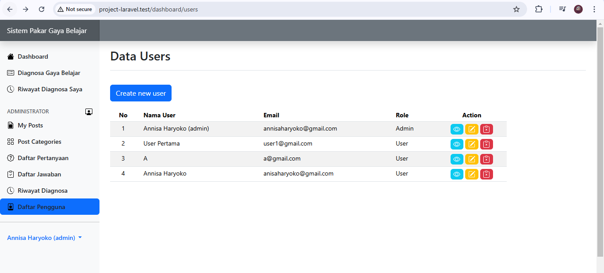
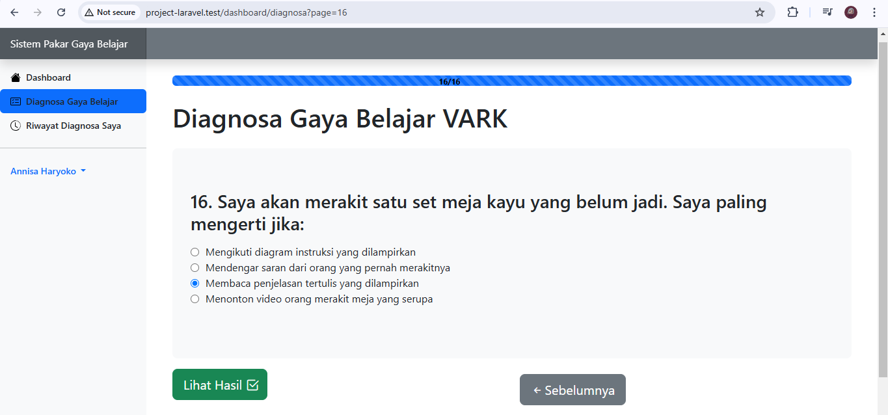
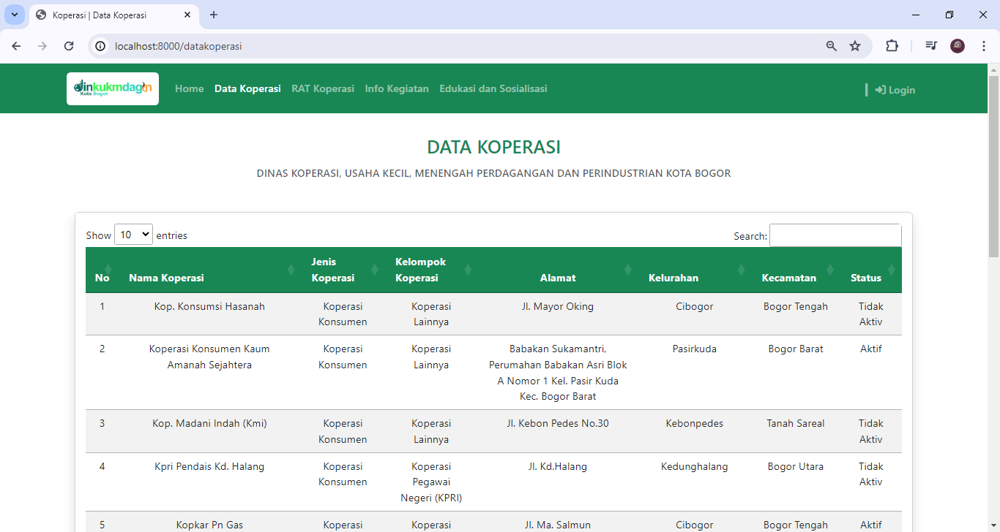
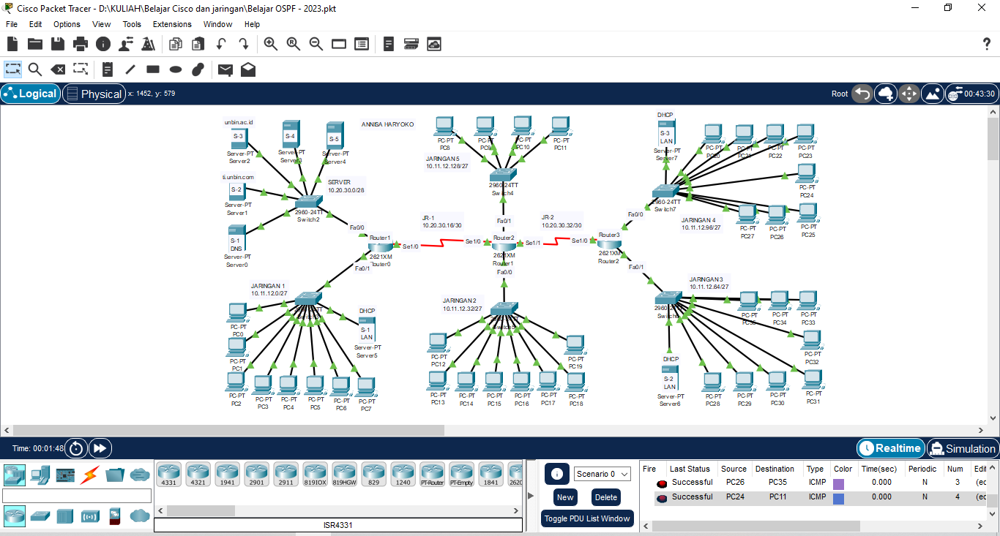
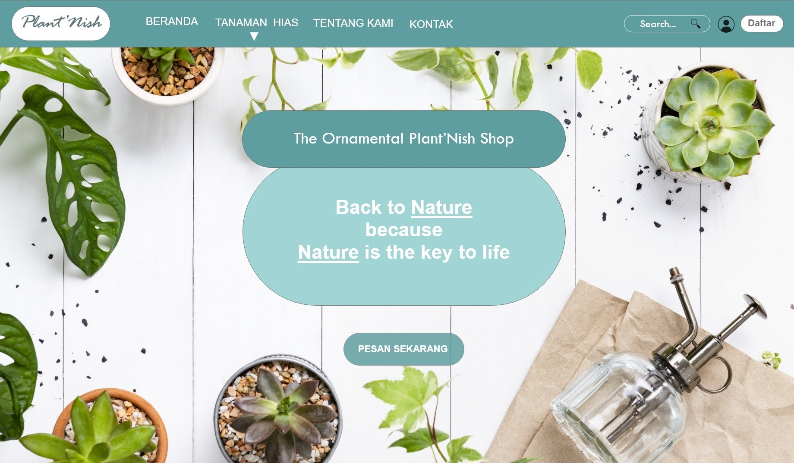

Portofolio
Project Terbaru
Berikut beberapa project yang pernah saya buat !

Sistem Pakar Diagnosa Gaya Belajar Siswa (tampilan admin)
Sistem Pakar untuk Diagnosa Gaya Belajar Siswa ini dibuat untuk memenuhi salah satu syarat dalam menempuh Ujian Sarjana Komputer (S.Kom). Dengan judul skripsi "Penerapan Metode Certainty Factor Pada Sistem Pakar Untuk Diagnosa Gaya Belajar Siswa" Pada sistem pakar ini metode Certainty Factor digunakan untuk mendiagnosa gaya belajar dengan 4 data model gaya belajar Visual, Auditory, Read/Write, dan Kinesthetic (VARK). Adapun 16 pertanyaan yang diajukan pada siswa dengan masing-masing jawaban dikategorikan kedalam model VARK. Pada gambar diatas merupakan tampilan untuk admin yang dapat mengelola sistem, adapun admin dapat menelola data seperti category gaya belajar, menegelola pertanyaan, jawaban, pengguna hingga melihat keseluruhan riwayat diagnosa siswa.

Sistem Pakar Diagnosa Gaya Belajar Siswa (tampilan user)
Sistem Pakar untuk Diagnosa Gaya Belajar Siswa ini menggunakan pemograman PHP dengan framework Laravel dan database MySql. Tampilan gambar diatas merupakan halaman setelah login yang dilakukan oleh user (siswa), yang hanya dapat mengakses halaman dashboard, diagnosa gaya belajar dan riwayat diagnosa. Adapun user diwajibkan mengisi keseluruhan pertanyaan dengan menjawab salah satu dari pilhan jawaban tersebut yang hasil akhirnya akan menampilkan diagnosa gaya belajar yang sesuai, nilai dari tiap gaya belajar dan perhitungan yang ditampilkan pada halaman Hasil Diagnosa.

Sistem Informasi Pelayanan Koperasi Kota Bogor
Sistem Informasi Pelayanan Koperasi Kota Bogor ini dibuat dalam rangka mengikuti program magang yang diadakan dikampus, sistem informasi dengan pengembangan web ini dibuat dengan bahasa php dan menggunakan framework Laravel dan sistem informasi koperasi berbasis web ini masih dalam tahap pengembangan awal.

Website dengan CRUD PHP
Website ini dibuat dalam rangka mempelajari pemograman PHP dengan framework CodeIgniter dimana framework ini menggunakan konsep MVC atau Model View Controller yaitu sebuah cara dalam membuat website dengan memisahkan tiap databasenya di Model, tampilannya di View, dan perintah function dalam menghubungkan model dan view dalam Controller.

Website dengan Tailwind CSS
Website ini dibuat untuk memenuhi tugas mata kuliah Web Software Tool dimana dalam pengerjaan website ini menggunakan HTML, javascript dan tailwind CSS. Dalam web ini memuat isi pembelajaran mengenai jaringan dasar, switching, dan routing dengan menggunakan Cisco Packet Tracer untuk praktiknya. Untuk melihat website lebih lanjut, silahkan klik DISINI

Routing Dinamis OSPF
Melakukan konfigurasi jaringan dengan Routing Dynamic OSPF (Open Shortest Path First). OSPF adalah link-state routing protocol, algoritma link-state memperbaiki pengetahuan dari jarak router dan bagaimana mareka inter-koneksi.

Design Web E-Commerce
Design Web E-Commerce ini dibuat untuk memenuhi tugas mata kuliah Human Computer Interaction, dalam mengerjakan design web ini digunakan tools / aplikasi Adobe XD. Untuk melihat design lebih lanjut, silahkan klik DISINI

Design Packaging Produk
Design packaging produk ini dibuat untuk memenuhi tugas mata kuliah Design Graphic, dalam mengerjakan design packaging produk ini menggunakan tools / aplikasi CorelDRAW dan design packaging ini mengikuti gambar yang ada di pinterest.